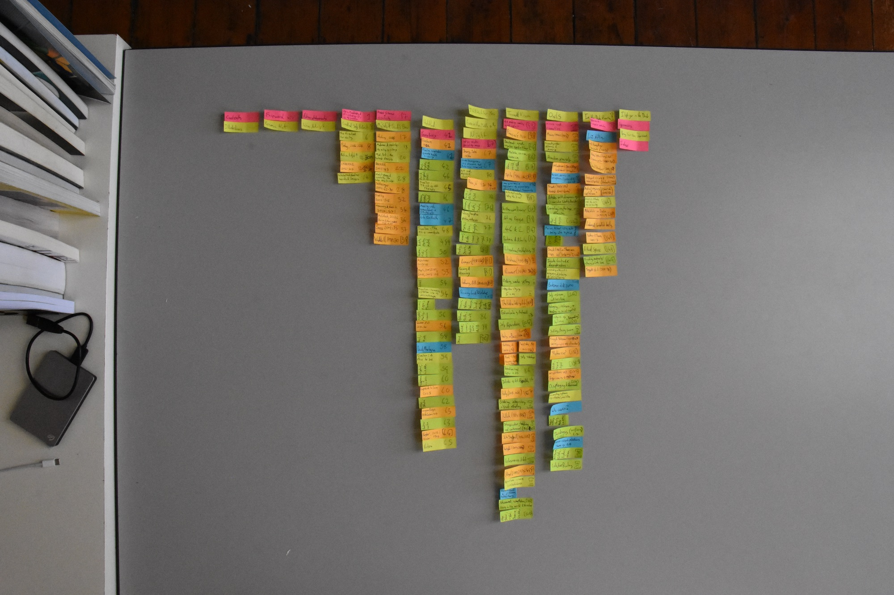
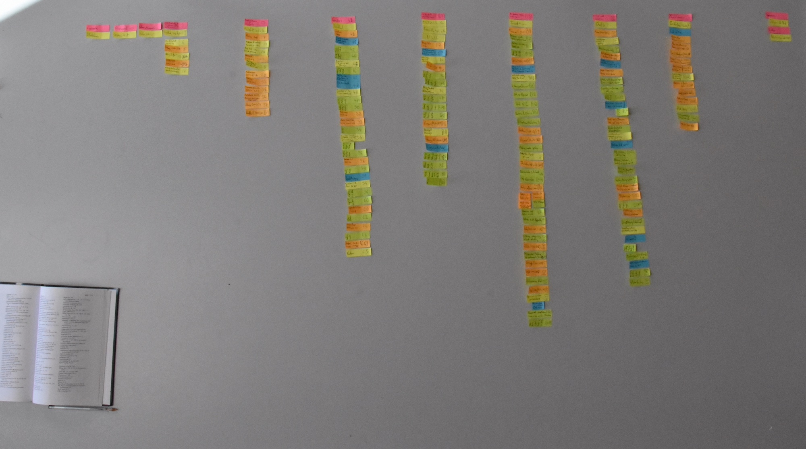
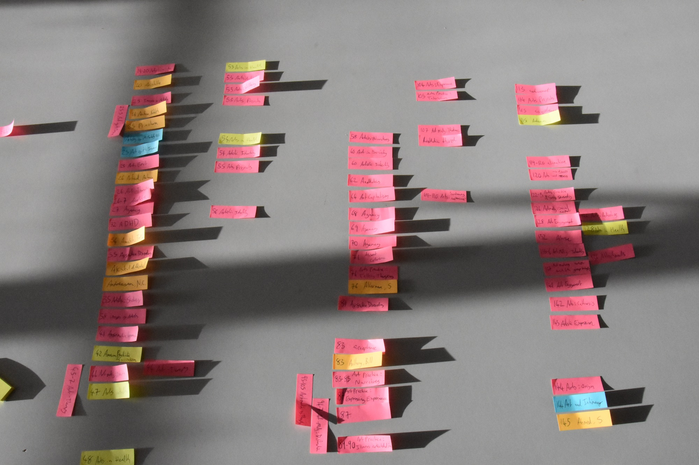

Indexes and Structural Analysis

In this portfolio entry, I intersperse heterogenous interpretations of indexes with photographic documentation of index-focussed, practice-led research I conducted. To this extent it is an inexhaustive index index or metaindex
From a semiotic perspective Pierce (2015) emphasises that "[a] sign may represent its object in consequence of being connected with it in fact. Such a sign is termed an Index."
Alternatively, from the perspective of contemporary economics, "[a]n index is a method to track the performance of a group of assets in a standardized way. Indexes typically measure the performance of a basket of securities intended to replicate a certain area of the market" (Chen and Scott, 2020).
By contrast one might also consider the Social Progress Index whose "objective is to utilize a clear yet rigorous methodology that isolates the non-economic dimensions of social performance" (Nagel, n.d.).
